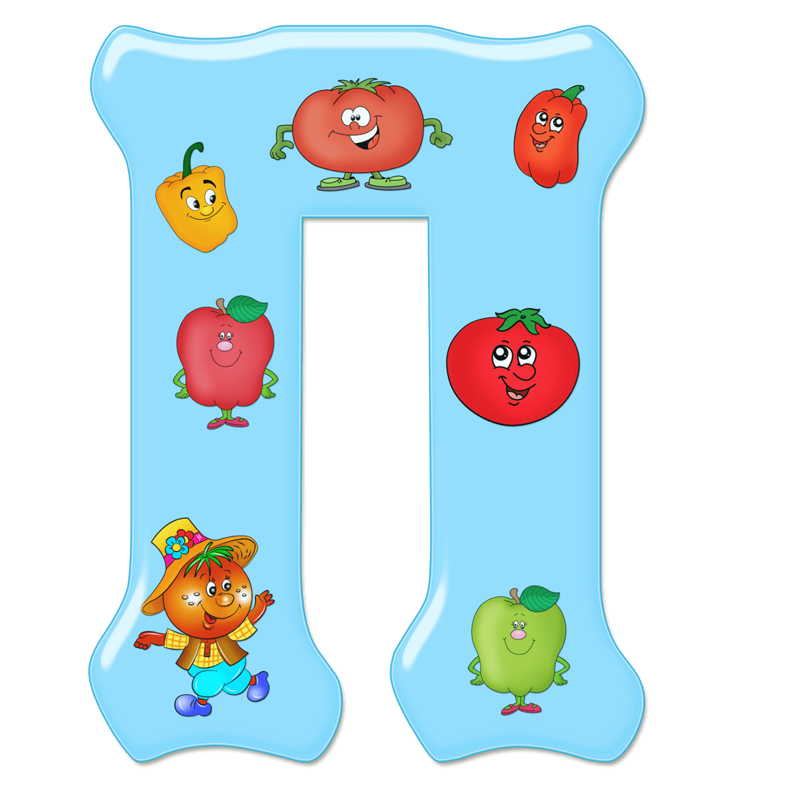

|  | рофессорская дача на берегу Финского залива. В отсутствие хозяина, друга моего отца, нашей семье позволялось там жить. |
Даже спустя десятилетия помню, как после утомительной дороги из города меня обволакивала прохлада деревянного дома, как собирала растрясшееся, распавшееся в экипаже тело.
та прохлада не была связана со свежестью, скорее, как ни странно, — с упоительной затхлостью, в которой слились ароматы старых книг и многочисленных океанских трофеев, непонятно как доставшихся профессору-юристу. Распространяя солоноватый запах, на полках лежали засушенные морские звёзды, перламутровые раковины, резные маски, пробковый шлем и даже игла рыбы-иглы.
Аккуратно отодвигая дары моря, я доставал с полок книги, садился по-турецки в кресло с самшитовыми подлокотниками и читал. Листал страницы правой рукой, а левая сжимала кусок хлеба с маслом и сахаром. Откусывал задумчиво и читал, и сахар скрипел на моих зубах. Это были жюль-верновские романы или журнальные, переплетённые в кожу описания экзотических стран — мир неведомый, недоступный и от юриспруденции бесконечно далёкий.
На своей даче профессор собрал, очевидно, то, о чём ему мечталось с детства, что не предусматривалось его нынешним положением и не регулировалось «Сводом законов Российской империи».